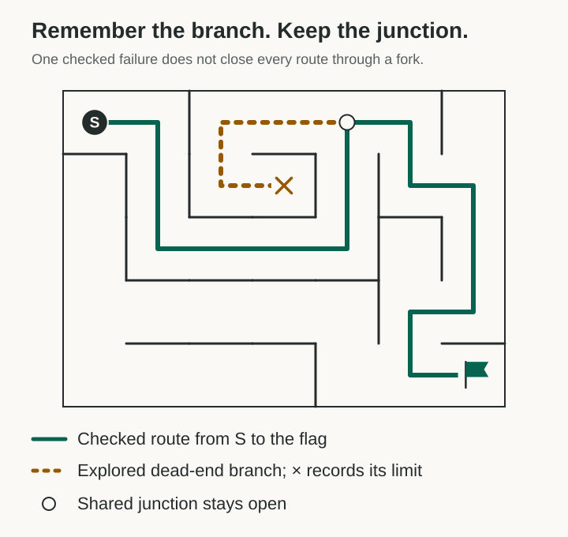
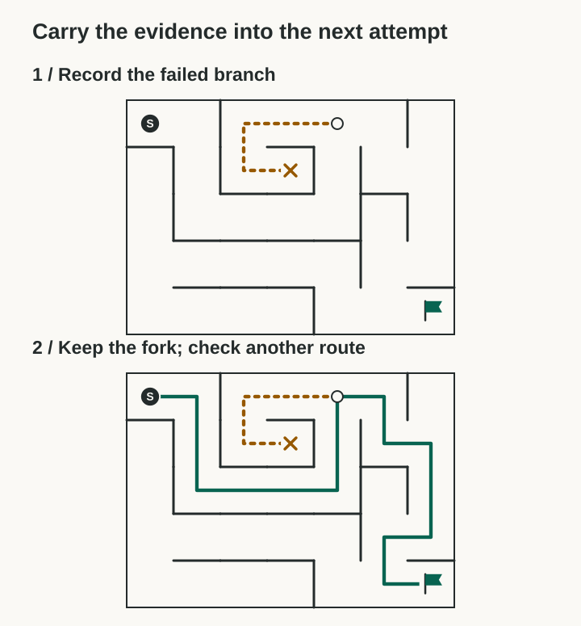
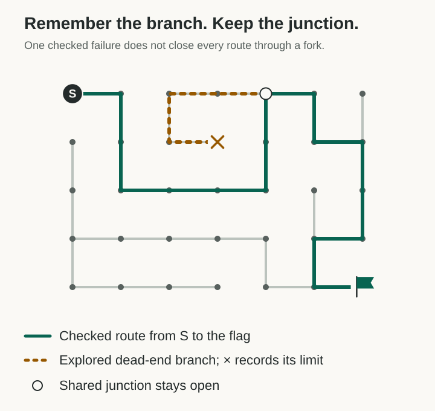

One maze, three views
All three drawings use the same 35 cells and 34 open passages. The checked route reaches the flag in 16 steps. The recorded branch runs four steps from the marked junction to a dead end. Each line follows an open passage.
1. Overhead map · selected
This version keeps the walls, the route, and the remembered failure visible at a useful size. It makes the key distinction easy to inspect: the dead branch can be rejected while the shared junction remains available.

2. Before and after
Repeating the maze makes the sequence clear, but uses more space and shrinks both drawings. It is accurate, though the single map lets the reader inspect the geometry more easily.

3. Junction graph
This shows every cell connection directly. It is the same topology, with walls removed from the drawing. That makes the graph easier to inspect, but less recognizable as a physical maze.

The validation record includes the paths and reachability checks. Reproduce the diagrams with the Python generator. These are executable graph checks, not a formal verification of the renderer.